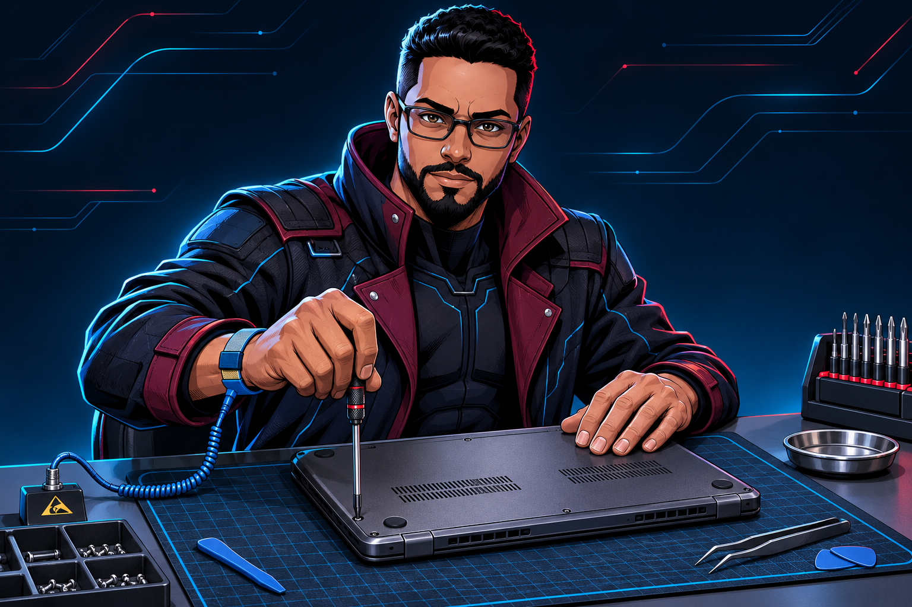
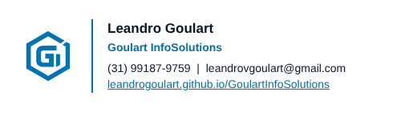

Manual de identidade visual
Versão 1.2 · Novembro de 2026
Seu mundo digital, nosso compromisso técnico.
Posicionamento
A Goulart InfoSolutions presta suporte de TI por alocação para empresas de TI e terceirizadoras. A marca comunica diagnóstico, execução e entrega documentada em equipamentos e ambientes corporativos.
Propósito · Ajudar equipes de TI a levar cada atendimento do diagnóstico a um fechamento verificável.
Valores · Clareza para combinar o escopo, cuidado para executar e testar, e rastreabilidade para registrar o que foi feito.
Logotipo horizontal
Use a composição com o nome no cabeçalho, na assinatura e nos materiais de apresentação. O símbolo Gi é a versão compacta para avatar, favicon e demais espaços quadrados.
Para fundo escuro
Para fundo claro
Monograma Gi
O desenho segue a prancha original. O hexágono tem vértices no topo e na base, laterais verticais e um corte diagonal no lado superior direito. O G tem curvas à esquerda e o i, sem ponto, termina em diagonal. Preserve essas características em todas as aplicações.
Azul para fundo escuro
Azul para fundo claro
Branco monocromático
Escuro monocromático
- Deixe uma margem livre ao redor do desenho equivalente a ¼ da altura do hexágono, medida a partir da borda visível.
- Em tela, use o monograma a partir de 32 px e a assinatura horizontal a partir de 180 px de largura. Confira a legibilidade do favicon no tamanho final.
- Mantenha proporções e cores oficiais. Em fotografia ou sobre a arte do hero, aplique sobre uma área lisa com contraste suficiente.
- Use SVG para web e ampliação. Os PNGs têm fundo transparente e servem para ferramentas que pedem uma imagem raster.
Paleta e tipografia
Azul-noturno e azul de sinal formam a base. O azul profundo é a variante do símbolo sobre fundo claro. Reserve o vermelho para pequenos acentos na ilustração.
Azul-noturno
#070E18Azul de sinal
#00A0ECAzul profundo
#0072B8Vermelho
#FF3B4EBranco frio
#E6EEF8
Para materiais digitais, use Chakra Petch nos títulos e IBM Plex Sans nos textos. As letras da assinatura são parte do logotipo vetorial. Use o arquivo fornecido ao aplicar a marca.
Avatar e direção de arte
Preserve o rosto, os óculos retangulares, a barba, o cabelo e a gola alta do personagem. Cada cena mostra uma tarefa concreta, com luz azul, detalhes vermelhos e fundo azul-noturno. A versão inicial mostra manutenção de notebook com chave Phillips.

No site, mantenha o texto e o botão como elementos da página. No recorte para celular, preserve rosto, chave e notebook.
Baixar arte de bancada em PNG
Duas linguagens de aplicação
Uma marca, duas expressões. O símbolo Gi, a tipografia e as proporções não mudam; mudam fundo, acabamento e efeitos.
Institucional
Cartão, crachá, proposta, relatório, uniforme. Fundo fosco e uniforme, sem efeitos. Logo monocromático (branco ou escuro). Vinho apenas como acento fino ou bordado.
#101820 marinho · #242629 grafite · #681C32 vinho · #C2C5CA prata · #F4F4F2 papelDigital
Site, redes, banner, apresentações. Gradientes e padrões sutis, brilho moderado, Gi nas cores oficiais (azul). Vermelho apenas em detalhe pequeno.
#070E18 noite · #00A0EC azul · #E6EEF8 branco frio · #FF3B4E detalhe- O Gi só aparece em azul, branco ou escuro. Nunca em vinho, vermelho ou verde.
- Fontes iguais nas duas linguagens: Chakra Petch (títulos) e IBM Plex Sans (texto).
- Impressão: papel 350 g/m², laminação fosca, verniz localizado no Gi se o orçamento permitir.
- Cartão de visita institucional: veja applications/cartao-institucional.html.
Voz e conteúdo
O leitor é um coordenador ou gerente de uma empresa de TI. Ele quer saber o que será feito, quando e o que recebe. A voz é direta, em primeira pessoa quando fala de quem atende, e específica.
Escreva assim"Correção aplicada e relatório com causa, ação e estado final."
"Alocação por demanda ou por período, como pessoa jurídica."
Evite"Soluções inovadoras de ponta para transformar o seu negócio."
"Parceiro estratégico para a sua jornada digital."
- Cada afirmação precisa de algo que a sustente: um entregável, uma credencial verificável ou um projeto público.
- Nada de SLA, disponibilidade ou prazo prometido sem contrato.
- Nomes de clientes não aparecem no site nem nas peças sem autorização por escrito.
- Exemplos ilustrativos são sempre marcados como exemplo.
- A frase "Seu mundo digital, nosso compromisso técnico." é o lema da marca. Use-a em rodapés e assinaturas. No site, o título do hero é o do chamado, porque diz o que a empresa faz.
Peças prontas
Os fontes em HTML ficam em brand/applications/; tools/gen_png.py gera os PNG.

Preview de link (1200 × 630)

Banner do LinkedIn (1584 × 396)

Assinatura de e-mail (applications/assinatura-email.html)
Aplicação por canal
Site
Assinatura horizontal no cabeçalho. Gi no favicon. Avatar de bancada no hero, com título e botão em HTML.
LinkedIn
Gi centralizado na foto de perfil. Use a paleta escura e a arte de bancada como base do banner.
Propostas e relatórios
Assinatura horizontal azul e escura sobre papel branco. Use a versão monocromática para impressão em uma cor.